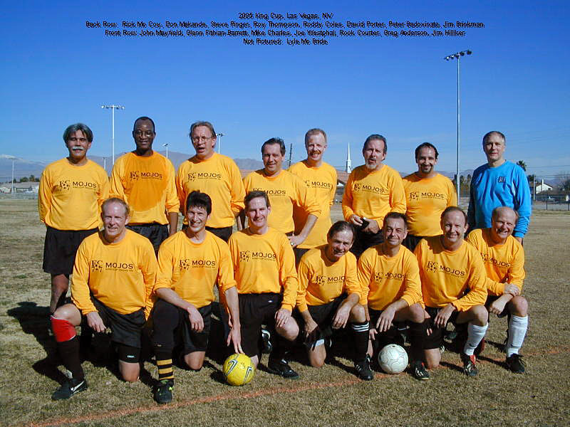
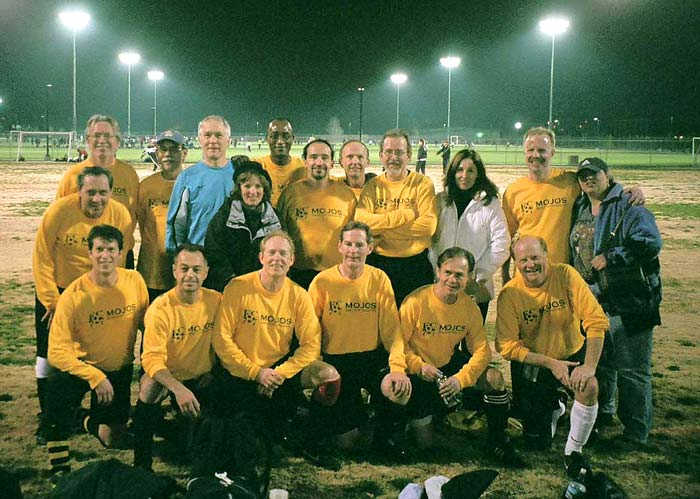
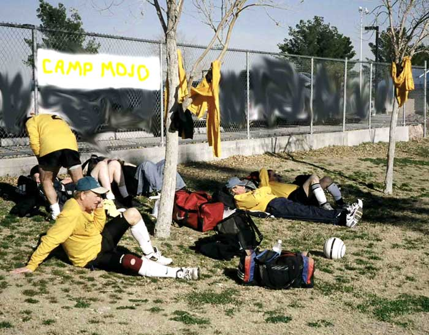

 |
|
King
Cup 2005 Results
|
||
| Sat. | Santos | 0 - 1 |
| Sat. | Shamrocks | 2 - 0 |
| Sun. | Colorado Mirage | 0 - 3 |
| Sun. | Los Veteranos de Ontario | 0 - 3 |
|
Santos
With the sage advice of centerbacks Peter
and John in their ears, the team returned to the field and settled into
a more effective game. Passing began to be more precise. The ball didn't
arc into the air as often, and Mojos orchestrated half a dozen point
blank assaults on the Santos goal. However, it was not destined to be,
and the match ended with Santos the victor by the single goal. Undeterred,
Mojos left the field believing that they had cemented the first phase
of their play as a team. The day was young and the next match wasn't
until 5:30. Hope sprang.....if not eternal, at least enough to last
the day. |
|
Shamrocks Mojos set out for Ed Fountain as the sun was going down.
This complex is actually the site of our famed win over Pierre's years
back, and has been renovated substantially. However, we didn't get to
use the nice fields. Again, since we were flood refugees, we were put
on the leftover fields. Not terribly short, but way too narrow. With
the onset of darkness, it got chilly and all were happy to start play
under the lights. When the second half started, it was clear that Shamrocks
were grouchy. Their physicality increased as did their flogging of the
referees. At one point, as Glenn went to head the ball, one on one with
the keeper on the distant edge of the box, the sidelines insults reached
fever pitch. The officials were not impressed. Moments later, Glenn
made a cutting run down the right side, beat the defender and drew the
hapless keeper toward him. With precision, Glenn passed the ball back
on the slant to the open goal where Joe Westphal, alone, took his time
and putted it in. Mojos led 2-0. Shamrocks counterattacked ferociously,
but to no avail. As the match ended, a looping high ball toward our
box was calmly snagged out of the air by Brink despite an attacker who
flung himself, literally, into the back of the net. Victory was sweet!
And well-earned.  |
|
Colorado
Mirage The Mirage, despite their name, were clearly visible in red
jerseys. We were ready, but sadly discovered that Brinkman was unable
to take the field. His stellar play the previous day led a bone spur
in his ankle to flareup. Gamely, Greg Anderson stepped in the hole. The game started with even distribution
of play. However, a long, spider-legged player for Mirage, dubbed Gilligan
because of his hat, contrived to break free on the left wing getting
a shot past Greg. The inevitable question as to whether he was onside
went unanswered, and we ended the half down a goal, though we'd played
well. In the second half, we traded keepers,
putting Greg's speed on the field while David stepped into goal. Although
Mojos made regular forays into the attacking zone, our shooting tended
skyward rather than goalward and frustration set in. After about twenty
minutes, Gilligan again broke loose from his defender and David came
out to close the angle as the gangly attacker shot. Despite getting
a glove on the ball, David couldn't stop the goal. Mojos did their best
to get back in the game, but Mirage had deciphered how to speedily counter,
and the defense and keeper found themselves facing run after run. David
stopped some of the shots, but a Mirage forward finally clinched the
game with a crackling shot from the right top of the box, just curling
inside the far left corner. Mojos left the field feeling that we'd played
well but not gotten the return. It was not a three goal game. |
|
Los Veteranos de Ontario  There wasn't enough time between games,
for the Mojos and entourage to return to Las Vegas proper so we took
the advice of Joann and Roddy and went to a nearby Steiner's Authentic
Nevada Pub for lunch. The place was smoke-filled, and featured innumerable
television sets tuned to the Eagles' game. Despite the fact that they
listed Drop Top Amber as a SF beer (alluded to in an earlier diatribe),
the food was decent and Mojos replenished gallons of vaporized liquids.
Having eaten, Mojos returned to the field area and established Camp
Mojo, a temporary bivouac wherein they hoped to stay out of the hot
sun. |
| FC77 MOJO Roster |
| Anderson, Greg
Badovinatz, Peter Brinkman, Jim Charles, Mike Coles, Roddy Courter, Rock Fithian-Barrett, Glenn Hilliker, Jim Makande, Don Mayfield, John Mc Bride, Lyle (MIA) Mc Coy, Rick Pinger, Steve Porter, David Thompson, Roy Westphal, Joe |